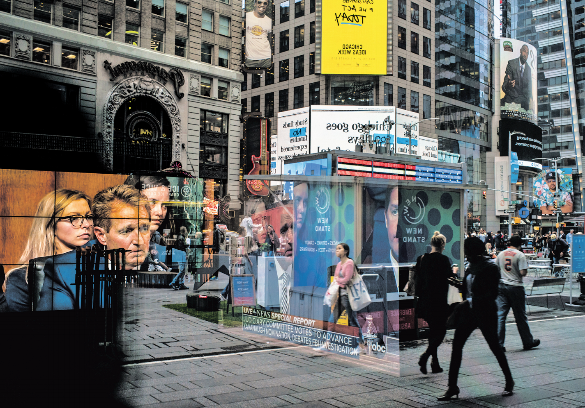

Details Show Narrow Range Of F.B.I.’s Task
4 Witnesses to Address Judge’s Behavior
Left off the list were former classmates who have contradicted Judge Kavanaugh’s congressional testimony about his drinking and partying as a student. The White House will decide the breadth of the inquiry, though presidential advisers were working in concert with Senate Republicans, said the two people, one a senior administration official, who both spoke on the condition of anonymity to discuss a sensitive.
The White House can order investigators to further examine the allegations if their findings from the four witness interviews open new avenues of inquiry, and Mr. Trump seemed to stress that part of the plan in a tweet late on Saturday. “I want them to interview whoever they deem appropriate, at their discretion,” Mr. Trump wrote. He denied an NBC News report that investigators were not permitted to examine the claims of Julie Swetnick, a woman who has said she witnessed a severely drunken Judge Kavanaugh mistreat women at parties in high school.

Senator Jeff Flake, Republican of Arizona, was seen on television screens amid window reflections of Times Square on Friday.
Fight Over Kavanaugh Shows the Power, and Limits, of #MeToo
By KATE ZERNIKE and EMILY STEEL
One of the first stories Gretchen Carlson covered in her career as a television journalist was the 1991 Senate hearing where Anita Hill sat alone at the witness table and testified that Clarence Thomas had sexually harassed her. Then, Ms. Carlson said, “I was promptly harassed on the job.”But it wasn’t for another 25 years that she would file her explosive sexual harassment lawsuit against Roger Ailes, the powerful founding chairman of Fox News. Ms. Carlson, too, was largely alone; it was July 2016, more than a year before the #MeToo movement would erupt, and even female colleagues at her own network questioned her actions. While she won a $20 million settlement, Mr. Ailes left the network with a $40 million payout. As she watched this week as another Supreme Court nominee faced sexual assault allegations — this time from a woman supported by sexual assault survivors and female senators sitting behind her — Ms.
Carlson could not help seeing the effects of the revolution she helped start, and its limits. “We’ve made such great strides with regard to the fact that women coming forward now are given a platform to tell their story,” she said. “That would have never happened before. But we are still in the ‘he said, she said.’” The next week may not reveal conclusively whether the nominee, Judge Brett M. Kavanaugh, sexually assaulted Christine Blasey Ford when they were teenagers, as she claims and he denies. The Judiciary Committee on Friday agreed to a one-week supplemental background check into Judge Kavanaugh by the F.B.I. But with all of its emotion and anger — and even the Republicans’ last-minute forced reversal on the background check — the fight over his nomination shows how the dynamics of the #MeToo movement have threaded their way into American life.
And depending on what the F.B.I. finds and how the Senate responds, it could serve as the test case for the power of the #MeToo movement.
HOUSING MARKET SLOWS AS PRICES OUTPACE WAGES
BELYING SOLID ECONOMY
Many Professionals Can’t Buy In — Families
Can’t Buy Up
Sales and construction activity have slowed in recent months. Houses that would once have drawn a frenzy of offers elementary-school are sitting on the market for days or weeks. Selling prices are rising more slowly, and asking prices are being slashed to attract buyers. Similar slowdowns have hit New York, Seattle and even San Francisco, cities that until recently ranked among the nation’s hottest housing markets.
The specifics vary, but economists, real estate agents and home builders say the core issue is the same: Home buyers are reaching a breaking point after years of breakneck price increases that far exceeded income gains. “The local economy is still fantastic, all the fundamentals are there, but obviously wages are not keeping pace,” said Steve Danyliw, a Denver realtor. “As the market continues to move up, buyers are being pushed out.” Rachel Sandoval is one of them. An elementary-school teacher in the Denver Public Schools.